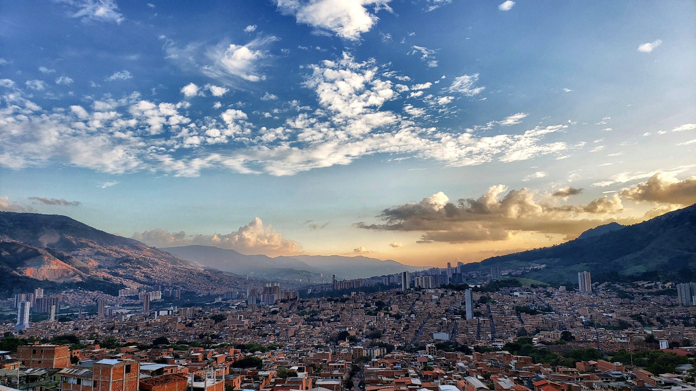
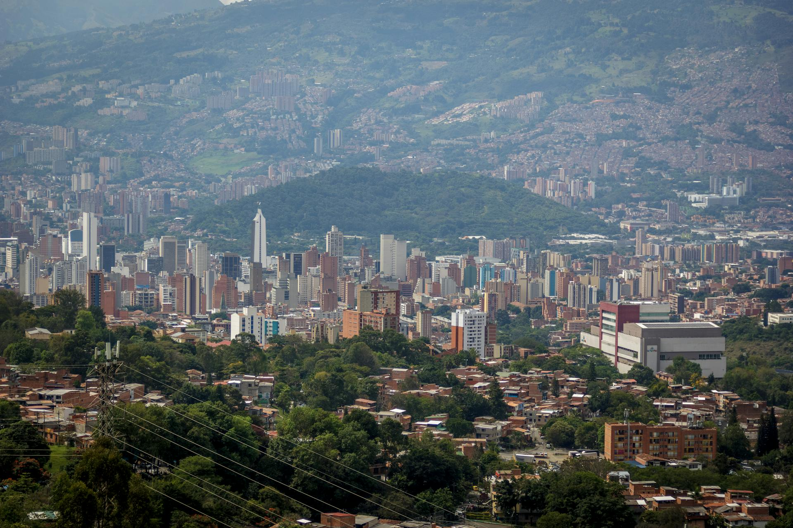
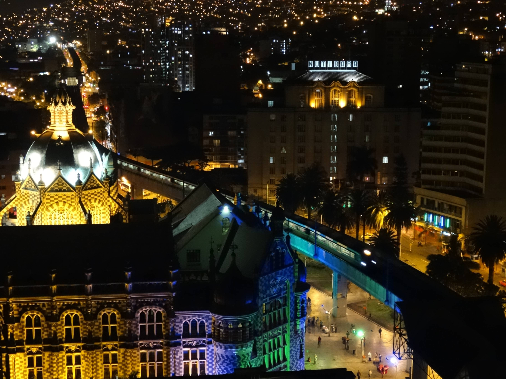
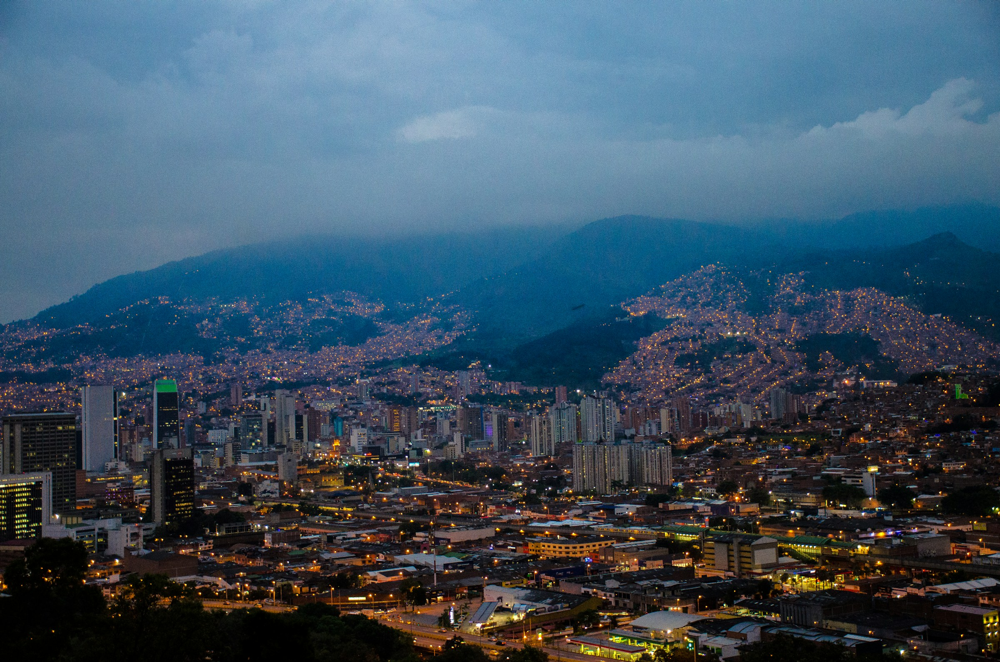

María G.
hace 2 semanas · ★★★★★
“Menú degustación impecable. El servicio es lento a propósito — disfrútalo. Pedí mesa con vista al valle.”




Alta cocina · El Poblado
Alta cocina colombiana con menú degustación y sala íntima. Ideal para impresionar sin salir del Poblado. Reserva con anticipación los fines de semana — los viernes se llena.
2.140 opiniones en Google
“Menú degustación impecable. El servicio es lento a propósito — disfrútalo. Pedí mesa con vista al valle.”
“Best tasting menu in Medellín. Book ahead for Friday. Worth every peso.”